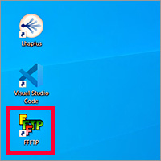

（1）
「FFFTP」定番FTPクライアントソフト - 窓の杜
https://forest.watch.impress.co.jp/library/software/ffftp/
↑のサイトに行き「窓の杜からダウンロード ↓」ボタンを押す ※64bit版の方をダウンロードする
（2）
自動的にダウンロードが始まる
（3）
「PC」→「ダウンロード」フォルダを開く
（4）
ダウンロードした実行ファイル（ffftp-v5.7-x64.msi）をダブルクリックする
（5）
インストールが始まる
「次へ」を押す
（6）
インストール先フォルダーの指定はそのままで
「次へ」を押す
（7）
「インストール」を押す
（8）
インストールが始まる
（9）
8図左：ユーザーアカウント制御（UAC）ダイアログが出た場合は「はい」を押す
8図右：管理者権限パスワードダイアログが出た場合は管理者権限のパスワードを入れて「はい」を押す
（10）
インストールが再開され、しばらくして完了する
動作確認
（11）

デスクトップにFFFTPのアイコンがあればOK
Webサーバーに接続する
（12）
デスクトップのFFFTPアイコンをクリックし、
立ち上がったら左上のメニューの「接続」→「接続」でホスト一覧を表示する（最初は一覧に何も無し）
ホスト一覧から「新規ホスト」を押し、ホストの設定画面が立ち上がる